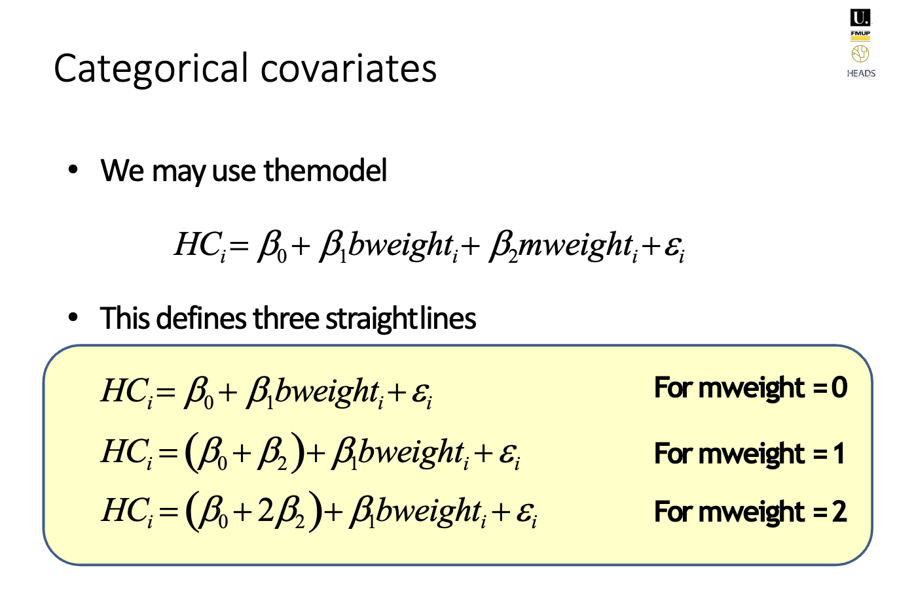
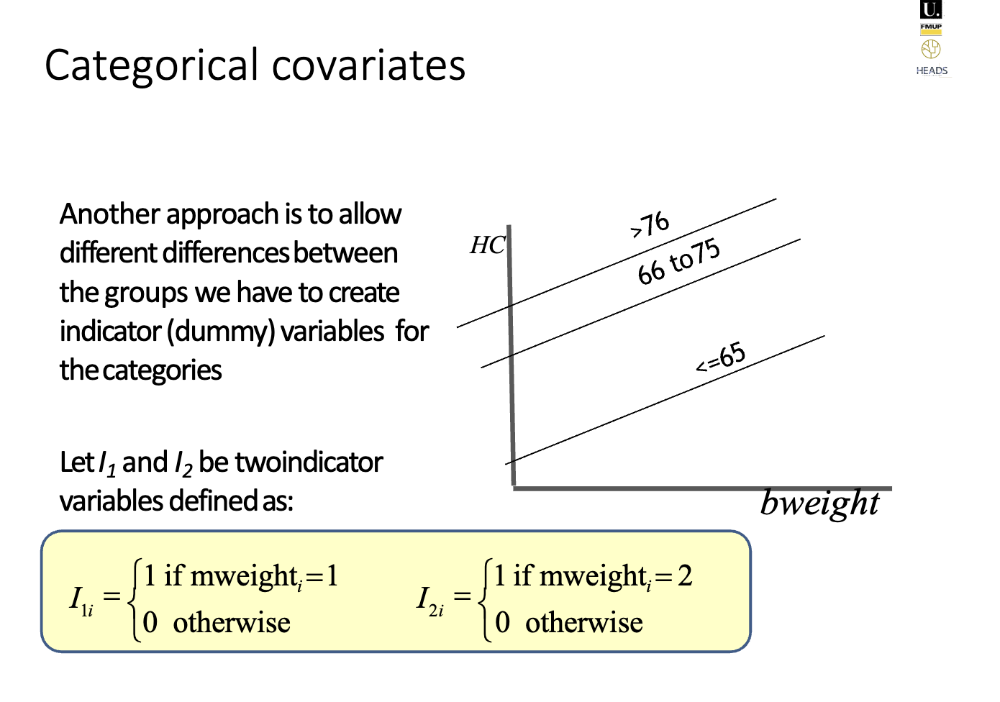
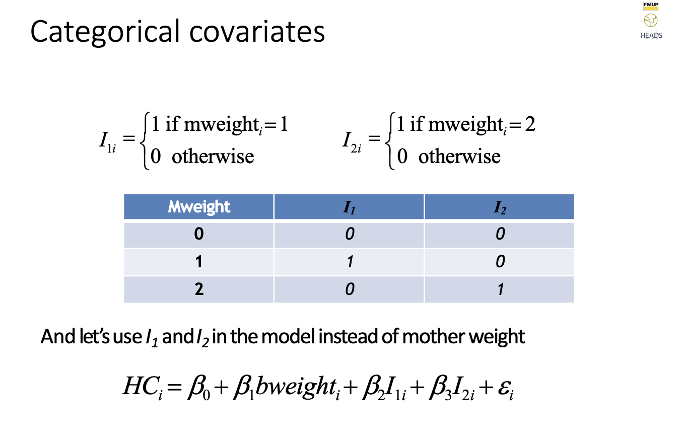
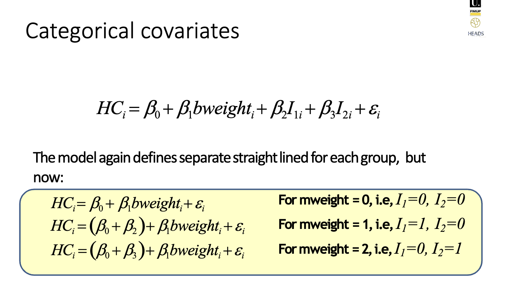

Lesson 7 - Multiple Linear Regression#
Topic: Multiple Linear Regression
Introduction#
The multiple linear regression is the natural extension of the simple linear model for several covariates

Geometrically this corresponds to fit a hyperplane to the data
For observations of the same char_1 (fixing char_1), the dep_var increases/decreases by z amount for each wy amount increase in char_2
For observations of the same char_2, the dep_var increases/decreases by amount z for each w amount increase in char_1.
Model Fit#
As before, we can ask how much variation of y can be explained by the model (with the two covariates).
The test above shows that the amount of variation explained by the model is significantly higher than zero.
This is equivalent to test H0: β1=β2=0
A good practice is to look first at this test and only then look at the individual tests H0:βA=0
However,the inclusion of an additional variable will allways increase the r2 so we should be carefull interpreting this statistics
An alternative measure that is often reported is the adjusted r2
The adjusted r2 corrects the r2 for the number of covariates in the model (model complexity)
More covariates => smaller r2
Assumptions#
To check the linear model assumptions we can use the same tools as before – the analysis of the residuals
Categorical covariates#
The categorical variables play a “special” role in regression
Each equation will correspond to a straight line with the same slope but different intercept
Notice that we are imposing this by chosing this model
If the categorical variable has more than two categories there are two possible approaches.
   
Interactions#
Allow to define two lines with different intercept and different slopes
Model Selection#
It is generally assumed that the researcher has some knowledge about the research topic so that he/she can identify a group of variables that are “candidates” for the model.
Note that this assumption is also made at the data collection level when the researcher chooses what data to collect.
Given the subset of candidate variables, we now want to build a good (best!) model.
We designate this process as model building, model selection or simply, modeling.
Even with a small subset of covariates the number of possible models is quite large (including the possible interactions and polynomial terms)
Three possible strategies are commonly used
Forward selection
Backward elimination
Forward and backward (stepwise)
Forward selection#
The first variable considered for entry into the equation is the one with the largest positive or negative correlation with the dependent variable.
This variable is entered into the equation only if it satisfies the criterion for entry (normally based on the p-value).
If the first variable is entered, the independent variable not in the equation that has the largest partial correlation is considered next.
The procedure stops when there are no variables that meet the entry criterion.
Backward elimination#
A variable selection procedure in which all variables are entered into the equation and then sequentially removed.
The variable with the smallest partial correlation with the dependent variable is considered first for removal.
If it meets the criterion for elimination, it is removed.
After the first variable is removed, the variable remaining in the equation with the smallest partial correlation is considered next.
The procedure stops when there are no variables in the equation that satisfy the removal criteria (based on the p-value).
Forward and backward (stepwise)#
At each step, the independent variable not in the equation that has the smallest probability of F is entered, if that probability is sufficiently small.
Variables already in the regression equation are removed if their probability of F becomes sufficiently large.
The method terminates when no more variables are eligible for inclusion or removal.
This is very similar to the Forward selection but each variable is reevaluated at each step and can be excluded after being included.
Summary of Interpretations#
For observations of the same char_1 (fixing char_1), the dep_var increases/decreases by x amount for each y amount increase in char_2
For observations of the same char_2, the dep_var increases/decreases by amount x for each y amount increase in char_1.